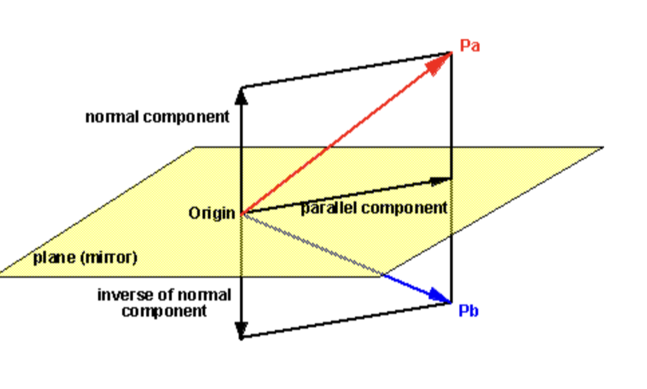

Linear Algebra Course Overview
MATH 250: Linear Algebra at Lawrence University teaches Linear Algebra by providing the basic tools so that students can use them to tackle more advanced problems, mostly involving proof writing. Although the tools seem basic and simple, they are the foundations of proofs and are useful in various ways. Thus, it takes creativity and flexibility to see how and where to apply them.
The first chapter introduces students to matrix and the reduced row-echelon form of matrix. By the way RREF is introduced, it seems as if we would use it to solve linear systems. However, its application to later chapters are highly useful. RREF provides an insight into determining whether a list of vectors is linearly independent and whether they span a vector space. These are the two requirements in checking if vectors are a basis for a vector space. Similarly, matrix multiplication is a computational procedure whose generalized form goes hand in hand with the standard basis vectors. It is often cited in lots of proofs. Matrix multiplication and RREF together are used in finding the eigenspace and null space of a matrix. Lastly, a list of bases that are eigenvectors give us a convenient tool to prove linear independence as well as diagonalization. Learning that one basis can be better than others, we can be aware of our basis choice when approaching a problem.
Thus, what students learn in the opening chapters come back from time to time in the later chapters, and they should utilize these foundational tools as they move onto new materials.
1.Reduced Row-Echelon Form: Pivots Say a Lot
A matrix is in its reduced row-echelon form if it is in its REF form and its pivot columns contain only the pivot. To find the RREF of a matrix, we can use these 3 row operations below:
R1: Add a multiple of one row to another row.
R2: Multiply a row by a nonzero constant.
R3: Switch any two rows.
RREF is a tool used not only in solving linear systems as it gives a more simplified version of the solutions than the REF does (Section 1.2), but also in finding eigenvectors and eigenvalues (Section 2.1) as well as in determining linear independence and basis (Section 3.1, 3.2).
The number of pivots relative to the dimension of a matrix (the number of rows and columns) is a quick tool to check for linear independence. Let \(A \in M_{m,n}(\mathbb{F})\). The pivot columns of A are linearly independent, and the number of pivots is the rank of A. The non-pivot columns of A can then be written as linear combinations of the columns of A that contain a pivot. The number of non-pivot columns tell us how many free variables in A, which is the null of the matrix. If the RREF of A has a pivot in every row, its columns span \(\mathbb{F}^m\). If the RREF of A has a pivot in every column, its columns are linear independent. And if \(m=n\) and A has a pivot in every column (which also implies that A has a pivot in every row), then the columns of A are the basis for \(\mathbb{F}^m\) (Section 3.2).
For example, the matrix A below has 2 pivots. We can write the third column of the original matrix as a linear combination of the first two. The matrix B has pivots in every row and column, and so its columns of the original matrix are linearly independent and are the basis of \(\mathbb{F}^3\).
For example, consider the matrix reductions below:
\[A = \begin{pmatrix} 1 & 2 & 3 \\ 2 & 5 & 6 \end{pmatrix} \rightarrow \begin{pmatrix} 1 & 0 & 3 \\ 0 & 1 & 0 \end{pmatrix}\]
\[B = \begin{pmatrix} 1 & 2 & 3 \\ 2 & 5 & 6 \\ 2 & 4 & 7 \end{pmatrix} \rightarrow \begin{pmatrix} 1 & 0 & 0 \\ 0 & 1 & 0 \\ 0 & 0 & 1 \end{pmatrix}\]
We also notice that the RREF of \(B\in M_{3}(\mathbb{F})\), whose columns are the basis of \(\mathbb{F}^3\), is in the form of the identity matrix \(\mathcal{\textbf{I}}_3\). This is a key idea in problems that ask to prove whether a matrix is invertible or whether a linear system of equations has a unique solution. Since \(Bx=c\) with \(c \in \mathbb{F}^3\) has a unique solution if and only if B has a pivot in every column, once we know the RREF of B is an identity matrix we can show that any vector in \(\mathbb{F}^3\) can be uniquely represented as a linear combination of columns of B. In section 2.4, we also learn that a square \(n\times n\) matrix is invertible if and only if its RREF is \(\mathcal{\textbf{I}}_n\). Thus, knowing the RREF can tell us if a matrix is invertible.
Being comfortable with row reducing and understanding the roles of pivots in relation with the matrix dimension can present us a useful tool to determine linear independence and combination, invertibility, and uniqueness of solution than just solving systems of equations.
2. Matrix Multiplication: Flexibility is a Tool
Section 2.3 provides us three different ways to look at matrix multiplication. All of them technically arrive at the same result, but by viewing the procedure from different angles. So at the end we have enough tools to approach a variety of problems.
One common trick from matrix multiplication that appears in proofs is pulling out a column of a matrix. For example, we pull the jth column of matrix \(A \in M_n(\mathbb{F})\) out by multiplying the matrix with the standard basis \(e_j\):
\[Ae_{j} = \begin{pmatrix} a_{1j} \\ a_{2j} \\ \vdots \\ a_{nj} \end{pmatrix}\]
From this, we can pull out the jth column of the multiplication product between matrix A and B (\(A, B\in M_n(\mathbb{F})\)), which is equal to the standard basis \(e_j\) if B is the inverse of A:
\[Ab_{j} = \begin{pmatrix} AB_{1j} \\ AB_{2j} \\ \vdots \\ AB_{nj} \end{pmatrix} = e_{j}\]
This method of looking at an individual column is used frequently in exercises. In particular, we need it for Problem 2.3.11: suppose that \(A \in M_{m,n}(\mathbb{F})\) is right-invertible, show that \(m \le n\), and for Problem 2.5.13: show that for \(A \in M_{m,n}(\mathbb{F})\) and \(B \in M_{n,p}(\mathbb{F})\), \(AB=0\) if and only if \(C(B)\subseteq kerA\).
Viewing linear combination as matrix multiplication also shows up a lot in exercises; one of them is Problem 3.2.19. Let a list of vectors \(v_1, v_2,...,v_n\) be the basis of \(\mathbb{F}^n\) and V be the matrix whose columns are \(v_1, v_2,...,v_n\) in that order. Then any vector \(v \in (\mathbb{F}^n)\) can be written as a linear combination of \(v_1, v_2,...,v_n\):
\[v= a_1v_1+ a_2v_2+...+ a_nv_n\]
we have
\[V = \begin{pmatrix} | & & | \\ v_{1} & \dots & v_{n} \\ | & & | \end{pmatrix}\]
then v can also be written as:
\[v = V \begin{pmatrix} a_{1} \\ \vdots \\ a_{n} \end{pmatrix}\] Essentially, matrix multiplication is a transformation tool used in computer graphics. We generate different geometric transformations by multiplying matrices together. For example, we can rotate something clockwise, reflect it over the y-axis, and stretch it by a factor of 3 all at once by multiplying the matrix of our original image with the product of the 3 matrices representing these transformations.
3. Eigenvector and Basis: They Go Well Together
Basis is a neat tool that shows up a lot in the later chapters after it is introduced in Section 3.2. It is closely related to RREF, which is mentioned earlier in this paper. Other than determining the dimension of a finite-dimensional vector space, basis also acts like a coordinate frame and we can choose what frame we want to look at. More importantly, when the basis is a list of eigenvectors of a matrix/linear map, we can use it to determine diagonalization.
Let () be the list of basis vectors \(v_1,v_2,...,v_n\) of a vector space V. If there is another list of basis vectors \(\chi = (w_1,w_2,...,w_n)\) of V, then linear independence allows us to write any basis vector in \(\chi\) as a linear combination of the basis vectors in \(\beta\). This essentially is the idea of change of basis, which allows us to change the coordinate frame of something we know into a nicer frame and simplify the problem that we are working on.
A special vector, eigenvector, is a nonzero vector on which the linear map acts by scalar multiplication, leaving its direction the same. One tool often used to prove independence is the linear map that is the differentiation operator on \({C^ \infty(\mathbb{R})}\). In Section 3.1, we learn that eigenvectors of a linear map corresponding to distinct eigenvalues are linear independent. We use this in Problem 3.3.6: suppose that \(\lambda_1,...,\lambda_n \in \mathbb{R}\) are distinct numbers and \(f_i(x)= e^{\lambda_ix}\), prove that dim \(\langle(f_1,...,f_n)\rangle=n\).
Eigenvectors also tell us about the diagonalization of a matrix or linear map. In Section 3.7 where we learn more about upper triangular matrix, we know that the eigenvalues of a matrix are its diagonal entries. We can then find the eigenvectors. If they are linearly independent, we have found a basis of all the eigenvectors and can conclude that the matrix is diagonalizable. In Section 3.5, we have a proposition which states that \([T]_\beta\) is diagonal if and only if $$ consists of all the eigenvectors of a linear map $T: V V $. This is just one of many parallels between matrix and linear map.
Knowing all of this, we can be smarter in our choice of basis. Problem 3.6.21: let \(P\) be the plane through the origin in \(\mathbb{R}^3\) and let \(R: \mathbb{R}^3 \rightarrow \mathbb{R}^3\) be the reflection across \(P\), find tr\(R\).

We can pick any 3 linearly independent vectors in \(\mathbb{R}^3\) to be the basis, but a random choice would result in unnecessary Multivariables Calculus. Instead, we can pick 2 linearly independent vectors that lie on the plane and 1 that is orthogonal to the plane. These are independent of each other and span \(\mathbb{R}^3\), and it is easier for us to find their reflection across the plane. Let \(v_1,v_2\) lie on the plane and \(v_3\) be orthogonal to \(P\). \(\beta\) is the list of basis vectors \((v_1,v_2,v_3)\).
\[R(v_{1}) = v_{1}, \quad R(v_{2}) = v_{2}, \quad R(v_{3}) = -v_{3}\]
then
\[[R]_{\beta} = \begin{pmatrix} 1 & 0 & 0 \\ 0 & 1 & 0 \\ 0 & 0 & -1 \end{pmatrix}\]
\[\text{tr}\,R = \text{tr}\,[R]_{\beta} = 1 + 1 + (-1) = 1\]
The problem is much shorter and simpler when we pick a good basis!